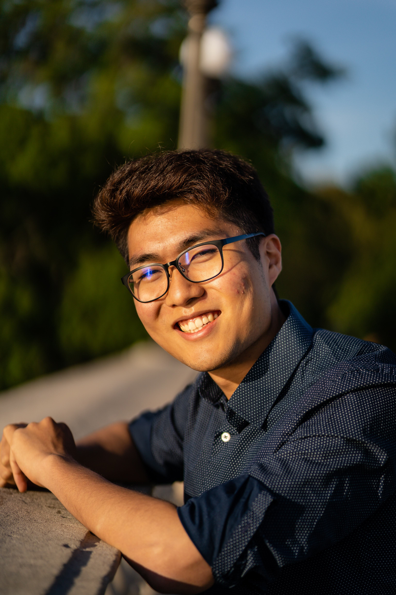

About Me
Currently I am a Harvard Undergraduate student pursuing my study in neuroscience and computer science to better understand how the human brain learns and functions. I find it fascinating how the billions of neurons in the human brain function together to create memory, consciousness, behavior, and psychological state. Hopefully with the coming years, I will be able to learn and research more towards this area to help patients with any mental or neurological functionality. My hobby is working on cool electrical and software projects (find out more in my portfolio). I also have a strong passion for K-12 education and providing all students both equity and excellence.